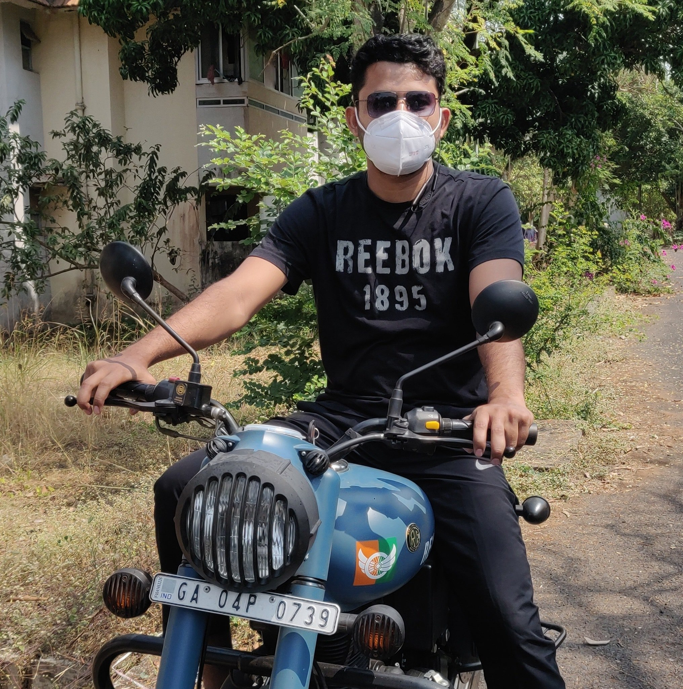

Hello, I’m Sohan PM.
I’m a research scholar in Physical Oceanography.
I am a dedicated research scholar at the CSIR-National Institute of Oceanography (CSIR-NIO), Goa. My work focuses on integrating advanced data analysis and numerical modeling to unravel the complexities of ocean dynamics and their impact on climate systems.
With a background in Atmospheric and Electronics Sciences, I specialize in Data Analysis (Python, IDL), Numerical Modeling (WRF, WW3), and Remote Sensing. My goal is to contribute to sustainable marine resource management and climate change mitigation through innovative, data-driven research.
With a background in Atmospheric and Electronics Sciences, I specialize in Data Analysis (Python, IDL), Numerical Modeling (WRF, WW3), and Remote Sensing. My goal is to contribute to sustainable marine resource management and climate change mitigation through innovative, data-driven research.